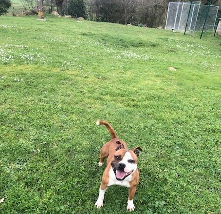

Kingdom Warriors est une pension canine et un élevage familial de stafforshire bull terrier et un centre d'entrainement.

On vous accueille, pour répondre à toutes vos préoccupations concernant votre chien.
La pension, La Cabane des Loupiots accueille votre chien, et garantie à votre chien un séjour varié, au cours duquel son bien-être est notre préoccupation principale.
L'éducation de votre chien est une priorité de votre quotidien ?
On vous aidera dans cette démarche, par nos conseils éclairés en leçons ou en pension travaillée.
Passionnés de chiens ?
On fera tout pour vous aider dans la pratique de votre discipline :
- Entrainement de vos chiens dans leurs spécialités, sous l'oeil vigilant et aiguisé du formateur, en leçons, stages, ou pension travaillée.
- Vente de croquettes ainsi que la vente de materiels et accessoires.
- Les chiots de l'élevage naissent suite à une sélection sur les qualités naturelles, la sociabilité et la réceptivité au dressage. Ils sont préparés et éveillés à la vie de tous les jours (maison, voiture, sociabilisé avec les animaux et les membres de la famille etc ...).